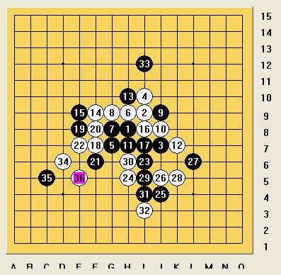
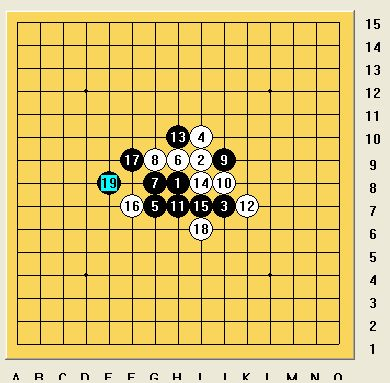
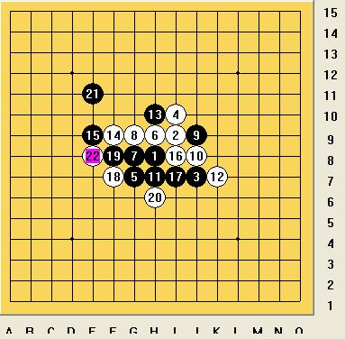

首页
≮炫飞☆棋社≯

我执黑和李一
想不到第一局就对上他，可谓宿敌之战。
我开局，水月6打。以为有研究，必胜无疑。谁知这个5通斜月立四3打，对方熟悉。10手后，我陷入了长考。决定11活三，本打算如下图强攻，杀不掉就算了，因为实在想不到什么好手段。

没想到竟然先冲4！！最初想法如下

考虑到这样强攻杀不掉必死，不仅20/*760*90，创建于2012-2-9*/ var cpro_id = 'u761865';